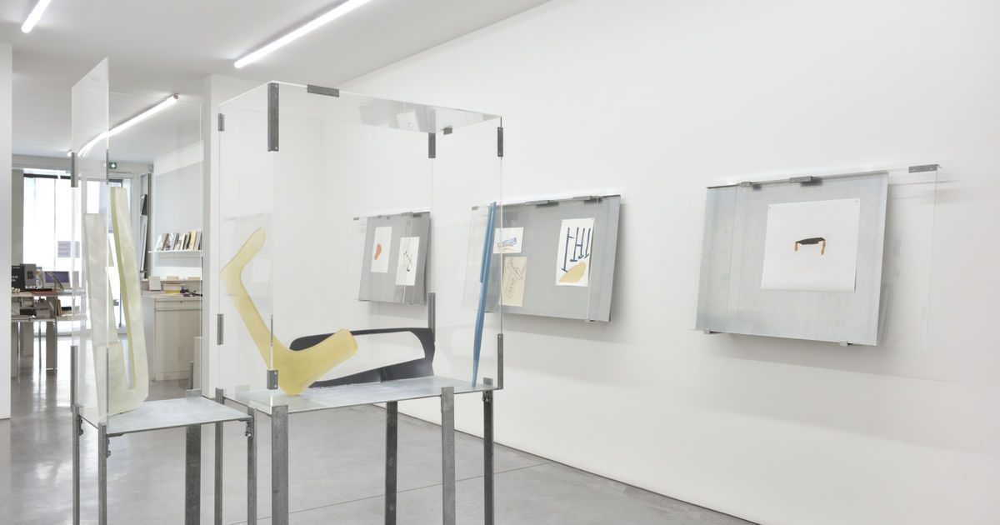
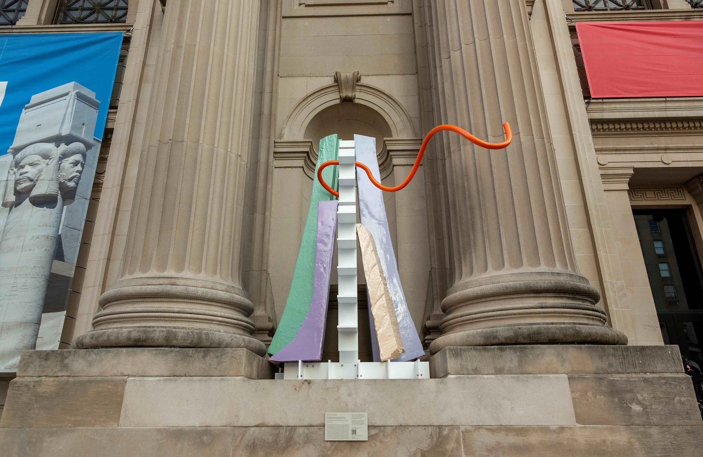
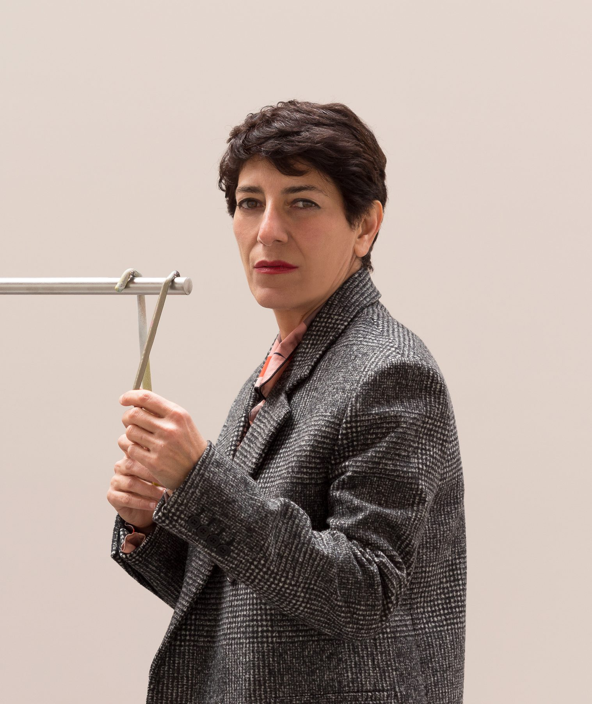
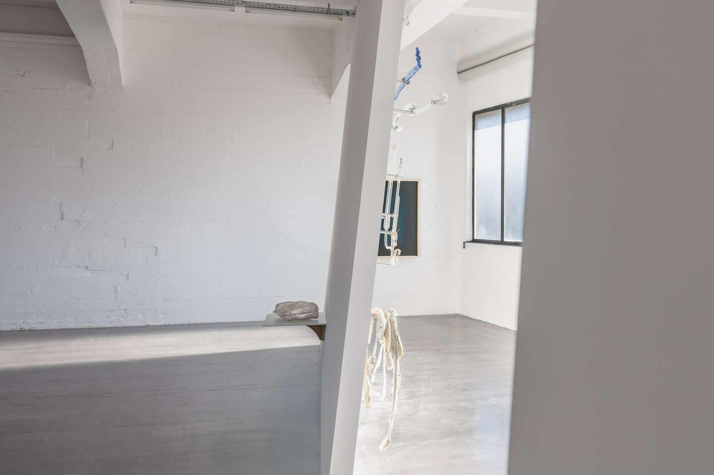
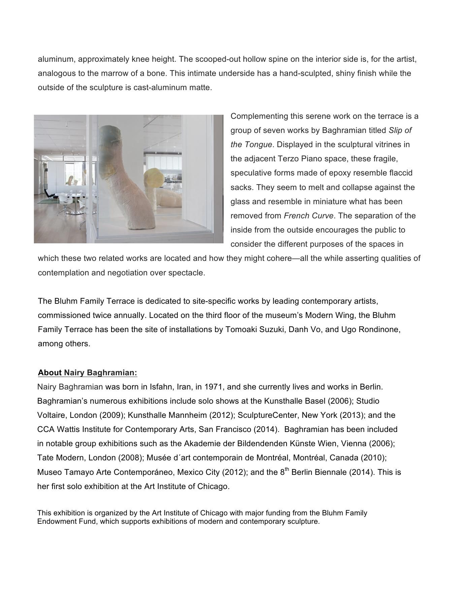
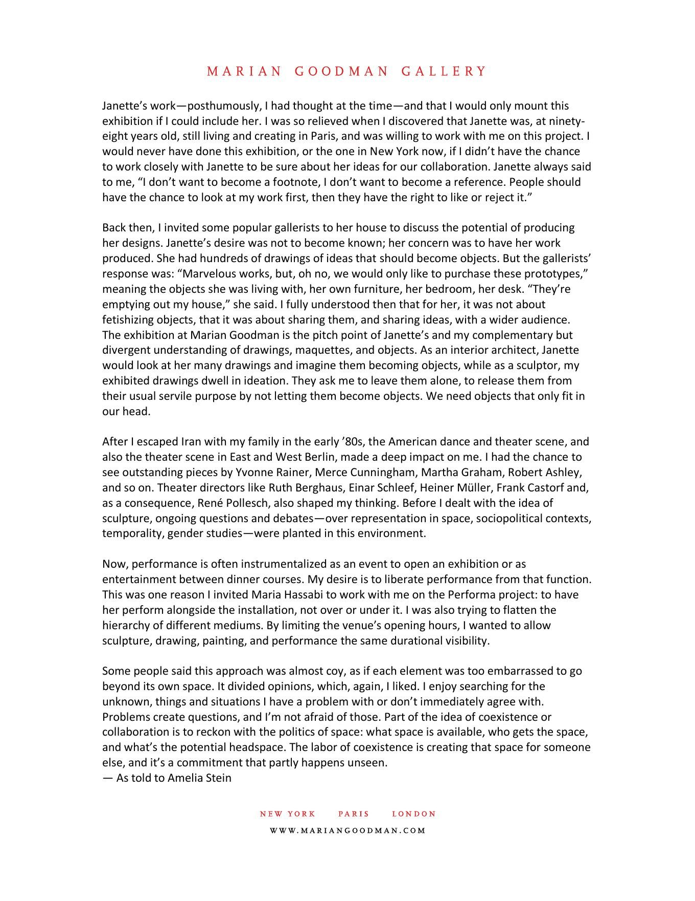
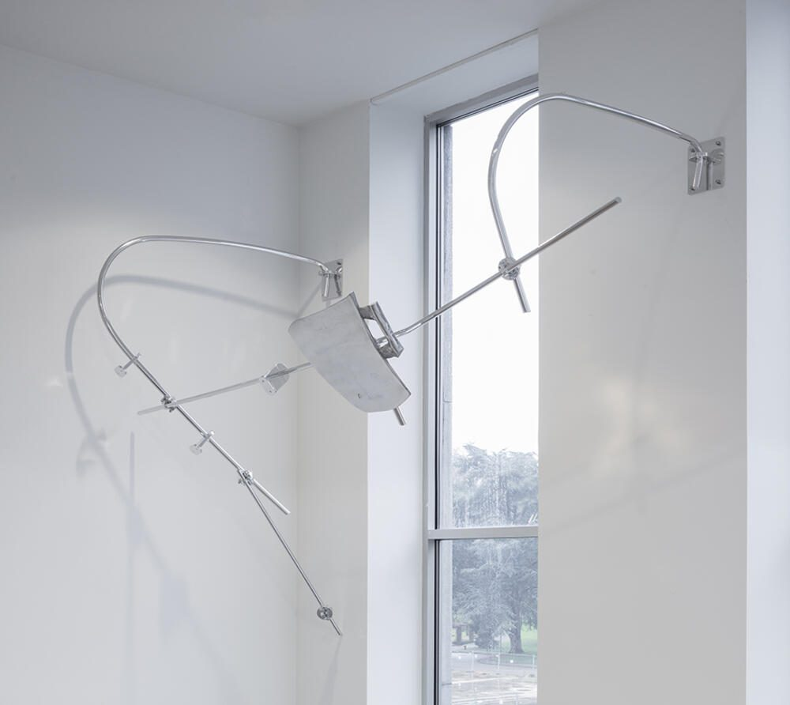

02艺术家 / ARTIST

雕塑不是孤立的对象，而是一组关系。
Baghramian 的作品在雕塑、装置、摄影与绘画之间移动。她经常把支架、框架、墙面、家具和建筑条件带进作品，使“作品本身”与“作品如何被观看”同时成为问题。
她的工作既有工业材料的重量，也保留身体语言的脆弱、悬置和失衡。作品不急于完成一个稳定形象，而是在部件之间留下空隙，让观看从物件转向关系。
1971出生 / born
柏林工作室 / studio
雕塑媒介 / medium
03 / RESEARCH PATH
从近到远的研究路径
点击年份，查看作品、展览与来源之间的关系。

04 / WORKS & EXHIBITIONS
作品与展览索引
05 / CRITICISM & SOURCES
评论不是附录
从不同来源进入作品：机构文本提供事实，评论提供问题，访谈保留语气。
01
批评 / CRITICISM
Sculpture Notwithstanding
这篇文章把 Baghramian 放进后极简主义与后制度批评的脉络，强调雕塑不必总是站立、完整、自足和稳定。它为“支撑、依赖、疲劳、脆弱”提供了概念入口。
打开原文 ↗
机构文本 / PRESS RELEASE
French Curve / Slip of the Tongue
同一艺术家在室外平台与室内空间中的双重展示。
Art Institute of Chicago ↗

06关键词 / KEYWORDS
07 / SOURCE MAP
来源地图
每一个图像、作品判断和展览事实都回到可点击的原始页面。